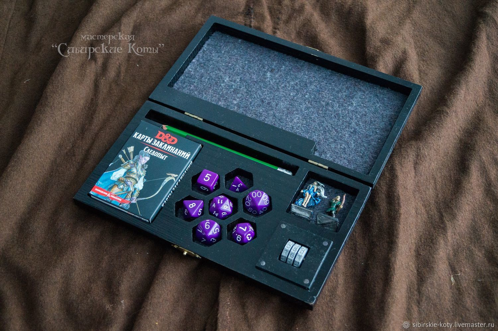

Dungeons & Dragons (D&D, DnD; Подземелья и драконы) — настольная ролевая игра в жанре фэнтези, разработанная Гэри Гайгэксом и Дэйвом Арнесоном. Впервые была издана в 1974 году компанией «Tactical Studies Rules, Inc.» (TSR). С 1997 года издаётся компанией «Wizards of the Coast» (WotC).
В игре участвуют ведущий (так называемый «мастер») и несколько игроков, число которых варьируется в зависимости от редакции и пожеланий участников. Обычно один игрок руководит в игровом мире действиями одного персонажа. Мастер действует от лица всех неигровых персонажей, описывает окружающую среду и происходящие в ней события.
